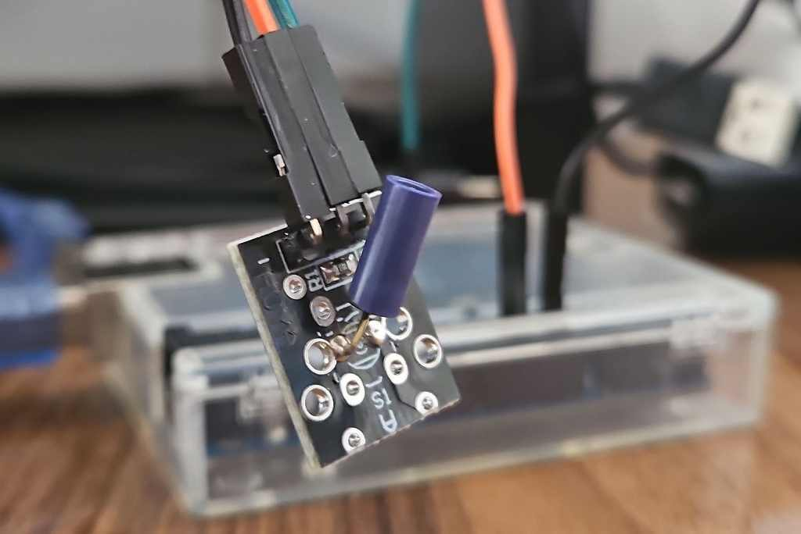

Inicialmente, foram realizados testes simples de leitura do sensor KY-002. Foram compradas 2 unidades dele, de forma a ser testado individualmente por cada um dos integrantes. Ele é um dos mais simples disponíveis no mercado para detecção de vibração, sendo composto de uma mola que ao receber uma vibração externa faz uma conexão elétrica com o invólucro cilíndrico.

Mesmo sendo o mais simples dentre as opções, utilizando um código simples para mostrar em um monitor serial a detecção de níveis baixos de tensão vindo do módulo foi possível obter um resultado razoável. Quando o invólucro fica sem contato físico com nenhuma superfície, para acioná-lo é preciso dar um "tapa" no módulo. Mas é possível transmitir a vibração para ele ao deixar o invólucro encostado em uma superfície como a da futura caixa do protótipo. Além disso, dependendo do ângulo em que se deixa o sensor, a sensibilidade pode ficar maior ou menor.
Baseando-se em códigos obtidos no site da Programming Electronics Academy para o uso do Deep Sleep do ESP32, foi possível testá-los com sucesso e implementar o acionamento de um LED após acordado por tempo.
Porém, por uma má utilização do tempo, não foi possível demonstrar o acordamento pelo sensor dentro do prazo da Entrega 1, mas sim alguns dias depois.
Além do mais, foi discutido entre a equipe alternativas mais precisas de para detectar moviment, como sensores de vibração que pode ser regulado por um potenciômetro e o acelerômetro de 3 eixos LIS3DH - que possui maior precisão e consumo de apenas 2 µ A de corrente quando não acionado por uma interrupção. Porém, precisão não é o único fator importante sendo analisadas, já que é também necessário conseguir um baixo consumo de bateria, baixo custo e tamanho físico reduzido.